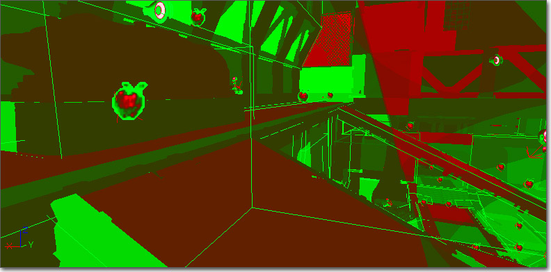
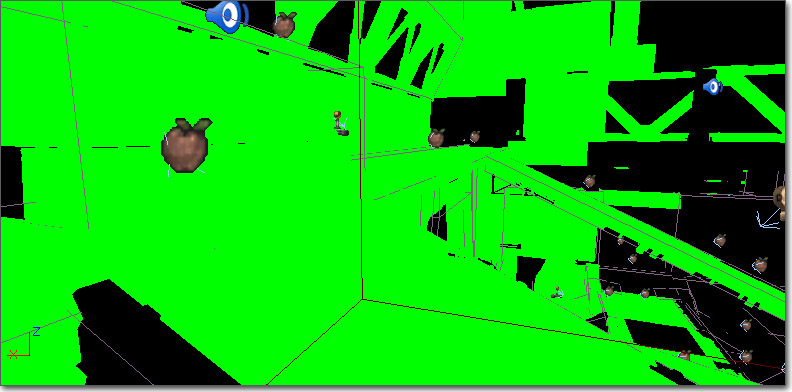
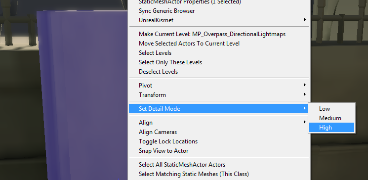

GPU Performance and Profiling
Overview
With GPU profiling there are a lot of complicated characteristics. The rule of thumb with regards to GPU performance is to always experiment. Pixel shading is the main time consuming work that the GPU does. Another GPU cost is transform/skinning, which is dependent on the number of vertices in the mesh. Skinned vertices cost much more than static mesh vertices.
Pixel Shading
Overdraw
Translucent materials can be a huge issue for GPU performance because of the overlapping of multiple translucent materials, or overdraw. In general, you want to limit the amount of screenspace any translucent materials are taking up at any time, especially when multiple translucent materials can be overlapping.
Particle systems are a big contributor in this area. Materials used for particles are usually translucent, and with many particles being drawn in any one system, there is a massive potential for overdraw. Some tips for limiting overdraw from particles are listed below:
- Fewer Complex Particles - It is better for performance to have a particle system that uses fewer complex particles than to have numerous simple particles. If an effect created by numerous particles can be created in the material and applied to a single particle that is preferable.
- Limit Screenspace Coverage - If you can limit the amount of space any particle effect takes up on screen, that limits the impact of the overdraw from the effect.
- Limit Overlapping of Effects - Overlapping of multiple effects amplifies the overdraw impact of any single effect. If possible, detect when multiple effects need to be spawned in the same location and only spawn a single effect instead.
Opacity Masking
Masked materials can be a source of wasted GPU performance because each pixel of the surface of the geometry must be evaluated regardless of whether it ends up being visible. To minimize the amount of overhead of a masked material, there are some optimizations that can be made.
- Match Geometry to Visible Material Area - It is actually more efficient to add extra detail to the mesh to make it more closely match the visible area of the material being applied to it than to use simple geometry with tons of wasted pixels.
- Remove Specular - Unless it is absolutely necessary, masked materials should remove any specular component to make the calculation of the wasted pixels as simple as possible.
- Use Non-Directional Lighting - Using non-directional lighting can lighten the instructions needed to calculate the lighting for the wasted pixels, resulting in faster performance.
Dynamic Lighting
Static lighting and lightmaps are far and away the most efficient method of lighting surfaces. It is always a good idea to limit the number of dynamic lights affecting surfaces in your levels. The goal should always be to have as much of the level as possible being affected by 0 dynamic lights, especially parts the player will never see up close. The Light Complexity view mode can help here as it displays the world in terms of the number of dynamic lights affecting the surfaces.
The lighting of dynamic objects can be a huge drain on performance. SkeletalMeshActors, KActors, InterpActors, etc. can make up a large part of the world and lighting these objects without any special techniques can be disastrous. DynamicLightEnvironments provide a method to light dynamic objects while limiting the impact on the GPU. Instead of a pass being made for each light on each object, al the lighting is condensed into a single light and pass. Of course, this comes with certain drawbacks as the lighting and shadowing cannot be 100% accurate. It is advisable to always use DynamicLightEnvironments whenever possible; however, there may be situations where accuracy or quality is paramount. In these cases, such as with cinematics, exceptions can be made.
Dynamic Shadows
Another potential source of performance problems is dynamic shadowing. A quick way to gauge whether dynamic shadowing has an impact on performance is to toggle it off via the SHOW DYNAMICSHADOWS console command. It is advisable to bind a key to this command, so that while the key is pressed dynamic shadows are turned off and then enabled again when the key is released. This can be done from the console - for example: SETBIND F SHOW DYNAMICSHADOWS | ONRELEASE SHOW DYNAMICSHADOWS.
For Actors created in UnrealScript we want to make use of ShadowParenting. This basically means that one actor can have LOTS of attachments but there is only one Dynamic Shadow cast. When you have a Pawn with a weapon, a helmet, a backpack, and some other attachments you want have all of the "attachments" shadow parented to the pawn itself. You do that by: Attachment.SetShadowParent(Parent.Mesh)
Performance limitations with dynamic shadows
The GPU cost of shadow buffers is directly proportional to the screenspace size of the shadow frustum. This means a nearby character using shadow buffers is much more expensive than a far away one. It also means that a large object casting a dynamic shadow buffer shadow is much more expensive than a small one. See the Shadow Buffer Filtering Options page for more details.
Also see the Shadowing Reference page and Modulated Shadows page for more shadow optimizations.
View Modes
Unreal Editor viewports can be set to render using various View Modes which are used to display a specific aspect of the scene in a meaningful manner.
Shader Complexity
The shader complexity view mode colors the scene based on how many pixel shader instructions were required to shade each pixel. Red means very expensive, green means very cheap. Notice that the translucent light shafts add cost to the cheap opaque materials behind them.

For complete details on this viewmode, see the Shader Complexity section of the View Modes page.
Light Complexity
The light complexity view mode colors the scene based on how many dynamic lights are affecting the surfaces. Black means no dynamic lights affecting. Various colors/shades, from green to red, show increasing amounts of dynamic lights affecting. The goal is always to have the entire level display as black, though that is obviously not always possible.

For complete details on this viewmode, see the Light Complexity section of the View Modes page.
Detail Modes
Sometimes you are shipping on multiple platforms where one doesn't quite have the GPU power of the others. Instead of making your level not look glorious on the platforms which can handle it, you can selectively turn off detail in your maps via DetailMode. This allows the same map to be used on multiple platforms. Additionally, you may have modes such a splitscreen which really crush the GPU. Not rendering visual-only detail is a great way to allow for splitscreen and still have a visually compelling map for non-splitscreen.
Every Component has a DetailMode which can be set. Setting something to High Detail will make it only render when High Detail is allowed:

Important!
You are viewing documentation for the Unreal Development Kit (UDK).
If you are looking for the Unreal Engine 4 documentation, please visit the Unreal Engine 4 Documentation site.